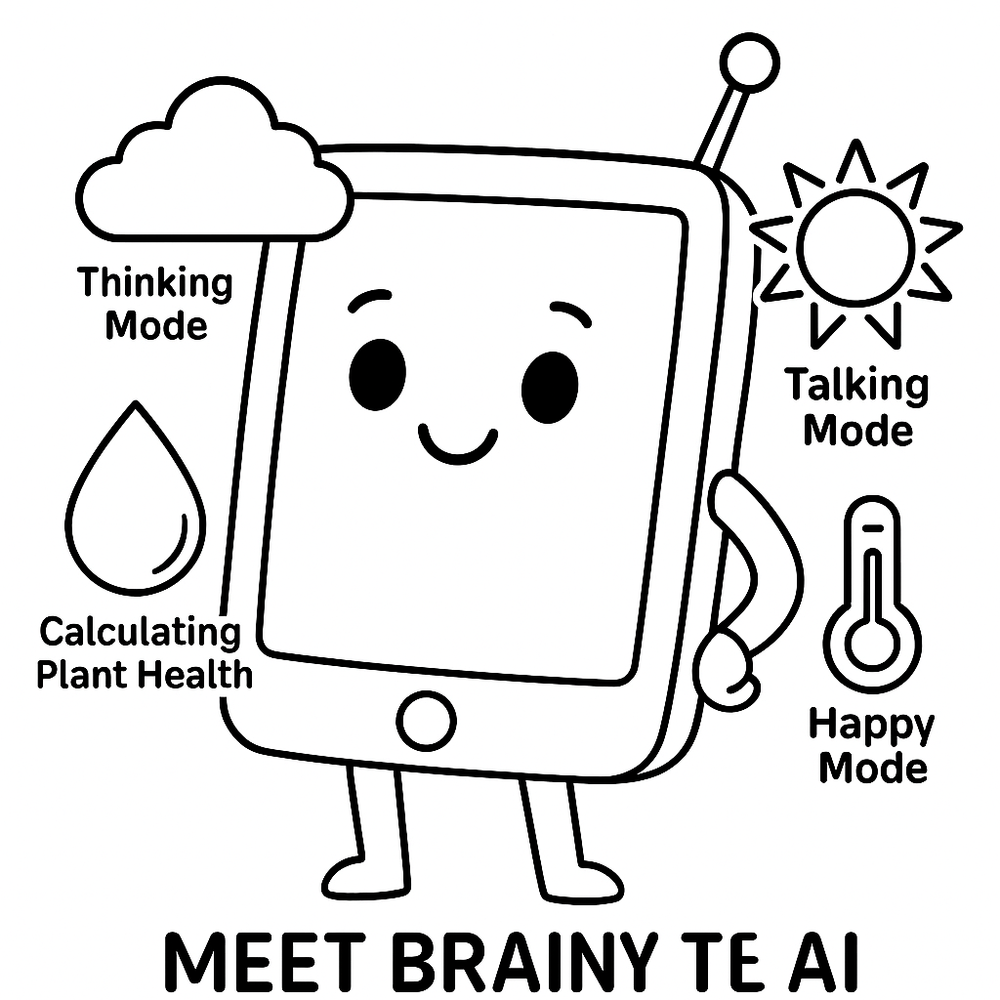

Un bocado del futuro
En este taller, los niños (4-7) visitarán "La granja inteligente del agricultor Ella" para aprender cómo los robots y las computadoras inteligentes (IA) ayudan a cultivar manzanas, zanahorias y lechuga deliciosas.
Recursos y descargas
Descarga las versiones PDF de este escenario o los anexos correspondientes.
Documentos de trabajo editables
Estos archivos editables se ofrecen como documentos de trabajo para docentes.
Grupo destinatario: 4 a 7 años
Duración de la actividad: 40 min
Principales objetivos de aprendizaje:
- Importancia de los alimentos: Comprenda por qué necesitamos comida y que todos necesitamos suficiente para comer.
- Origen de los alimentos: Descubra que la comida proviene de granjas y jardines, y cómo se cultiva.
- Pensamiento futuro: Imagínese nuevas formas de cultivar alimentos para alimentar a todos.
- Creatividad: Diseñar comidas divertidas y saludables en el futuro o ayudantes robots.
- Colaboración: Trabajen en equipos para compartir ideas.
Resultados de aprendizaje
El alumnado será capaz de:
CONOCIMIENTOS Y COMPRENSIÓN:
- Comprenda que la IA y los robots ayudan a cultivar, recoger y empacar alimentos.
- Reconocer las tareas que pueden realizar las máquinas (riego, clasificación, recogida).
- Comprender el concepto de "máquinas inteligentes" o "ayudantes robóticos".
COMPETENCIAS Y HABILIDADES:
- Habilidades de juego de roles y drama.
- Tomar decisiones sencillas (por ejemplo, "Si la planta está caída → regarla").
- Dibujar y contar historias para expresar ideas creativas.
ACTITUDES Y VALORES:
- Mostrar curiosidad sobre cómo se hace la comida.
- Apreciar el trabajo en equipo y la responsabilidad compartida.
- Valora la tecnología como una herramienta útil cuando se usa sabiamente.
Dimensión europea / conexión con Erasmus+
- STEM temprano: Promueve la educación digital de acuerdo con las prioridades europeas.
- Sostenibilidad: Fomenta la sensibilización sobre la seguridad alimentaria y la innovación.
- Competencias clave: Apoya la conciencia cultural y la alfabetización digital.
1. Recursos y herramientas
Materiales necesarios:
- Historia: "La granjera Ella y los robots ayudantes" (abajo).
- Recursos: imágenes de frutas y verduras, latas de riego, cestas.
- Etiquetas de nombre de robot/IA.
- Papel de dibujo, lápices y marcadores.
- Tarjetas meteorológicas (sol, lluvia, frutas maduras).
Materiales de apoyo para el aula:
- Utilice diapositivas dirigidas por los maestros o instrucciones de imágenes impresas para presentar a la granjera Ella y a los ayudantes robóticos.
2. Métodos de trabajo
- Narración de historias: Para introducir y contextualizar el tema.
- Juego de rol: Para el aprendizaje experiencial y la interacción social.
- Dibujo creativo: Para su expresión personal.
- Conversación en círculo: Para compartir y discutir.
Resumen de las actividades
| Fase | Duración | Actividad | Descripción |
|---|---|---|---|
| Introducción | 10 minutos | Tiempo y motivación | Lea "La granjera Ella y los ayudantes de robots". Explique la IA simplemente como un "cerebro inteligente de computadora". |
| Investigación | 20 min | Juego de rol: Granja inteligente | Los estudiantes actúan como robots (Picksy, Sprinkles) y plantas. Un estudiante actúa como «Brainy» (IA), dando instrucciones según el tiempo y las necesidades de las plantas. |
| Creación | 15 minutos | Diseñe su robot de comida | Los estudiantes dibujan su propio robot de alimentos y describen cómo ayuda (por ejemplo, "Mi robot ayuda por..."). |
| Reflexión | 10 minutos | Tiempo de círculo y color | Debate: «¿Cómo fue ser una IA?». Colorear la ficha «Brainy, la IA». |
3. Introducción y motivación
Cuento: Ella, la granjera, y los robots útiles

Había una vez una granjera inteligente llamada Ella. Vivía en una granja grande y soleada, donde cultivaba zanahorias, manzanas y lechuga. Ella no lo hacía todo sola: ¡tenía amigos robots y una computadora muy inteligente que la ayudaba!
Un robot, llamado Picksy, tenía brazos largos y ruedas. Picksy fue dando una vuelta por el huerto de manzanas. «¡Bip! ¡Bip! ¡Manzanas maduras a la vista!». Con un suave agarre, Picksy recogió manzanas rojas y las puso en cestas.
Otro robot, llamado Sprinkles, ayudó a regar las verduras. ¡Pero Sprinkles no rociaba agua por todas partes! La computadora inteligente con IA le dijo a Sprinkles: "La lechuga está sedienta hoy, pero las zanahorias están bien!" Así que Sprinkles solo regó lo que necesitaba.
En el interior del granero estaba el cerebro de todo: una computadora inteligente llamada Brainy. Brainy no tenía brazos ni piernas, ¡pero era de gran ayuda! Comprobó el tiempo y le dijo a la granjera Ella: «¡Mañana hará sol, ideal para plantar patatas!»
A la hora de acostarse, la granjera Ella sonrió. "Gracias, robots", dijo. ¡Juntos cultivamos buena comida para todos!"
4. Investigación y aprendizaje
Juego de rol: La granja inteligente de la granjera Ella
Establezca la escena: transformar el aula en una granja.
- Las plantas: Algunos estudiantes pretenden ser lechuga o fresas.
- Los robots: "Picksy" y "Sprinkles".
- IA («Brainy»): Un estudiante (o maestro) da órdenes basadas en pistas.
Ejemplo de comandos:
- «Riega solo las plantas que se marchitan».
- "Coge las fresas que son rojas".
- «¡No riegues hoy, está lloviendo!»
5. Aplicación creativa
Diseñe su propio robot de comida
Cada niño crea su propio robot de ayuda alimentaria en papel.
Las señales:
- ¿Cuál es el nombre de tu robot?
- ¿Qué trabajo hace?
- Inicio de la oración: "Mi robot ayuda con... "
6. Reflexión y evaluación
Círculo de reflexión de clase
- ¿Cómo fue ser la IA o el robot?
- ¿Qué trabajo le darías a un robot de comida?
Actividad de coloración
¡Descarga la ficha para colorear de abajo y conoce a Brainy, la IA!


Esta obra está disponible bajo la Licencia Internacional Creative Commons Atribución 4.0.